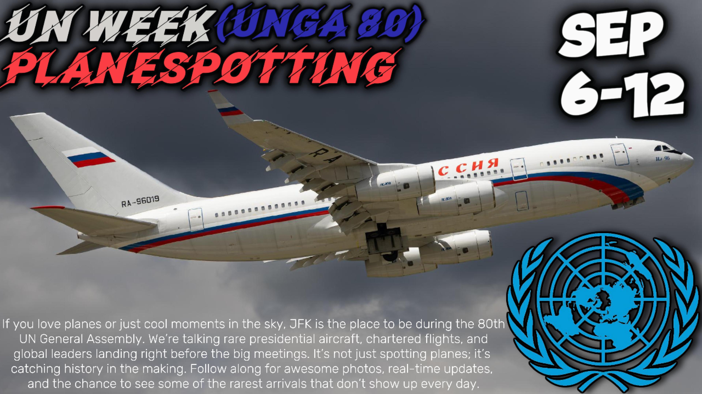

Wave of World Leaders Expected to arrive at JFK for UNGA #80

Published September 1, 2025
From September 20–29, 2025, New York City turns into one of the most exciting places on earth for planespotters. Whether you’re at JFK, Newark, LaGuardia, or even smaller airports like Farmingdale, this is the time when the skies are filled with aircraft you won’t normally see. The United Nations General Assembly brings leaders from all over the world, and with them come rare government jets, military cargo planes, and VIP aircraft that instantly turn the city’s airports into a global aviation hotspot.
JFK, of course, is the main stage. For a little over a week, it feels less like a commercial airport and more like a joint military and government hub. You’ll see everything from massive airlifters bringing equipment to sleek national jets carrying presidents and prime ministers. Each day feels like a lottery—you never know which nation’s aircraft will taxi past the fence line next. For spotters, it’s the kind of week you dream about all year long.
But it isn’t just JFK. The whole region lights up. Teterboro, Newark, LaGuardia, and Farmingdale all play a part in the action. Smaller business jets and support flights often head there instead of JFK, so if you’re willing to move around, you’ll get to see some aircraft that never come back to the U.S. once they leave. Every airport has its own surprises, which makes the chase even more exciting.
The atmosphere during UNGA week is unlike anything else. Security is tighter, military aircraft are more active, and the mix of planes is something you won’t find at any other time in New York. It’s a strange but amazing sight—seeing Air Force-style operations and government escorts happening right alongside your normal commercial traffic. It’s almost like New York’s airports become temporary military outposts, just for this short burst of time.
For aviation fans, this is as good as it gets. The variety, the rarity, the pure unpredictability—everything comes together to make spotting during the UN General Assembly unforgettable. One day you might catch a massive transport plane lumbering in from overseas, the next you might see a sleek government jet you’ve never even heard of before. For those few days in late September, New York really does feel like the center of the aviation world.
The expected aircraft to arrive include, but are not limited to, (this is not 100% accurate and aircraft can change.)
North America
United States — Boeing VC-25A (747-200B “Air Force One”) — United States Air Force (89th Airlift Wing)
United States — Boeing C-32A (757-200) — United States Air Force (89th Airlift Wing)
United States — MV-22B Osprey — United States Marine Corps (HMX-1 “Nighthawks”)
Canada — Airbus CC-150 Polaris (A310-300) — Aviation royale canadienne
Canada — Bombardier CC-144 Challenger — Aviation royale canadienne
Mexico — Boeing 737-800 BBJ — Fuerza Aérea Mexicana
Mexico — Gulfstream/Embraer Executive Jets — Fuerza Aérea Mexicana
South America
Brazil — Airbus A319CJ — Força Aérea Brasileira
Brazil — Airbus KC-30 (A330 MRTT) — Força Aérea Brasileira
Argentina — Boeing 757-200 “Tango 01” — Fuerza Aérea Argentina
Argentina — Boeing 737-700 BBJ — Fuerza Aérea Argentina
Chile — Boeing 737-500 — Fuerza Aérea de Chile
Chile — Gulfstream IV — Fuerza Aérea de Chile
Colombia — Boeing 737 BBJ — Fuerza Aérea Colombiana
Colombia — Fokker 28 Fellowship — Fuerza Aérea Colombiana
Europe
United Kingdom — Airbus A330-200 Voyager — Royal Air Force
Germany — Airbus A350-900 — Luftwaffe
Germany — Airbus A321LR — Luftwaffe
France — Airbus A330-200 — Armée de l’Air et de l’Espace
France — Dassault Falcon 7X — Armée de l’Air et de l’Espace
Netherlands — Boeing 737-700 BBJ — Koninklijke Luchtmacht
Spain — Airbus A330 MRTT — Ejército del Aire y del Espacio
Italy — Airbus A319CJ — Aeronautica Militare
Italy — Boeing KC-767A — Aeronautica Militare
Portugal — Dassault Falcon 50/900 — Força Aérea Portuguesa
Portugal — Airbus A330 MRTT — Força Aérea Portuguesa
Belgium — Embraer ERJ-135/145 — Composante Air
Belgium — Dassault Falcon 900 — Composante Air
Belgium — Airbus A321 — Composante Air
Ukraine — Airbus A319ACJ — Державне авіаційне підприємство «Україна»
Russia — Ilyushin Il-96-300PU — Специальный лётный отряд «Россия»
Africa
Egypt — Boeing 747-8I — القوات الجوية المصرية
Egypt — Dassault Falcon 8X — القوات الجوية المصرية
Nigeria — Airbus A330-200 — Nigerian Air Force
Nigeria — Boeing 737 BBJ — Nigerian Air Force
South Africa — Boeing 737-700 BBJ — South African Air Force
South Africa — Dassault Falcon 900 — South African Air Force
Kenya — Fokker 70ER — Kenya Air Force
Kenya — Boeing 787-8 — Kenya Airways (Government Charter)
Ghana — Dassault Falcon 900EX — Ghana Air Force
Rwanda — Gulfstream G650 — Repubulika y’u Rwanda (Government)
Morocco — Boeing 747-8 BBJ — القوات الملكية الجوية المغربية
Ethiopia — Airbus A350-900 / Boeing 787-8 — Ethiopian Airlines (Government Charter)
Asia
China — Boeing 747-8i — 中国人民解放军空军
China — Boeing 777-300ER — 中国国际航空 (Air China)
Japan — Boeing 777-300ER — 航空自衛隊
India — Boeing 777-300ER “Air India One” — भारतीय वायु सेना
South Korea — Boeing 747-8i — 대한민국 공군
Israel — Boeing 767-300ER “Knaf Zion” — חיל האוויר הישראלי
Turkey — Airbus A330-200 / A319CJ / Boeing 747-8i — Türk Hava Kuvvetleri
Qatar — Boeing 747-8i / Airbus A340-500 / Gulfstreams — الرحلة الأميرية القطرية
Saudi Arabia — Boeing 747-400 / Boeing 777-300ER — القوات الجوية الملكية السعودية
Oceania
Australia — Boeing 737 BBJ — Royal Australian Air Force
Australia — Airbus KC-30A (A330 MRTT) — Royal Australian Air Force
New Zealand — Boeing 757-200 — Royal New Zealand Air Force
New Zealand — Boeing 737 BBJ — Royal New Zealand Air Force